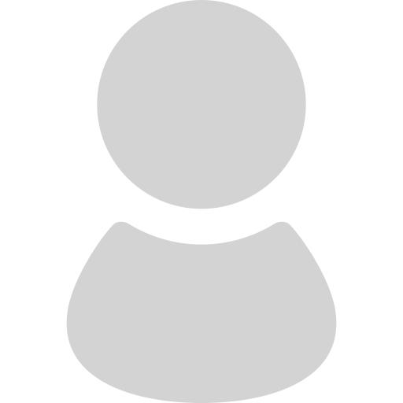
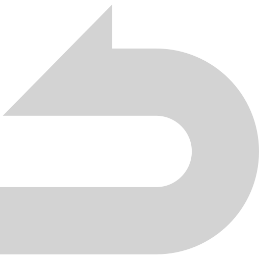

{% extends "base.html" %}
{% block head %}
<!-- <link rel="stylesheet" href="/Library/resources/style.css"> -->
<!-- スタイルシート読み込みなさい -->
{% endblock %}
{% block body %}
<!-- bodyタグに書く内容を書きなさい -->
<script src="https://cdnjs.cloudflare.com/ajax/libs/crypto-js/4.1.1/crypto-js.min.js"></script>
<div class="overlay" id="overlay" style="display:none" >
    <div class="loader" onclick="back_page()">
        <div></div>
        <div></div>
        <div></div>
        <div></div>
    </div>
    <div class="redirect-links">
        <a href="/login"></a>
        <h3>{{ operation }}</h3>

        <form method="post" action="/login" id="redirect_login_form">
            <input id="user_id" name="userid" placeholder="ユーザーIDを入力" type="text" autocomplete="off"
                   onkeydown="next_pw(event)"><br>
            <input id="user_password" name="password" placeholder="パスワードを入力" type="password" autocomplete="off"
                   onkeydown="next_button(event)"><br>

            <button type="button" id="login_button" value="Login" onclick="login()"
                    style="box-shadow:0 0 15px 0 rgb(77,77,77);">サインイン
            </button>
            <br><a href="/new_account">アカウント作成はこちら！</a><br>
        </form>

        <a href="javascript:history.back()"></a>
        <br>
        <a href="/" style="text-align: center">閉じる</a>
    </div>
</div>
<script>
    document.addEventListener("DOMContentLoaded", function () {
        // ここでフォーカスを設定するコードを実行する
        document.getElementById("user_id").focus();
    });

    function next_pw(event) {
        if (event.key === 'Enter') {
            document.getElementById("user_password").focus();
        }
    }

    function next_button(event) {
        if (event.key === 'Enter') {
            document.getElementById("login_button").click();
        }

    }

    function back_page() {
        history.back();
    }
    function login() {
        const user_id = document.getElementById("user_id").value;
        const user_password = document.getElementById("user_password").value;
        if (user_id == "" && user_password == "") {
            top_alert("エラー", "ユーザーIDとパスワードを入力してください", 5000);
            return;
        } else if (user_id == "") {
            top_alert("エラー", "ユーザーIDを入力してください", 5000);
            return;
        } else if (user_password == "") {
            top_alert("エラー", "パスワードを入力してください", 5000);
            return;
        }

        const login_point_q = "{{ redirect_url }}";
        (login_point_q);

        let redcturl; // 変数をブロックの外で宣言

        if (login_point_q === "" || login_point_q === undefined || login_point_q === null || login_point_q === "null" || login_point_q === "undefined") {
            redcturl = window.location.pathname;
        } else {
            redcturl = login_point_q;
        }

        let login_point = "/login";
        let user_password_hash = CryptoJS.SHA512(user_password).toString();
        let login_data = {
            "userid": user_id,
            "password": user_password_hash,
            "redirect": redcturl
        };


        fetch(login_point, {
            method: "POST",
            headers: {
                "Content-Type": "application/json",
            },
            body: JSON.stringify(login_data),
        })
            .then((response) => {
                if (!response.ok) {
                    throw new Error("Network response was not ok");
                }
                return response.json();
            })
            .then((res) => {
                var st = res["res"]["st"];
                var msg = res["res"]["msg"];
                var redirect = res["res"]["url"];
                if (st === "False") {
                    top_alert("エラー", msg, 5000);
                    return;
                } else {
                    top_alert("情報", msg, 500);
                    setTimeout(function () {
                        window.location.replace(redirect);
                    }, 500);
                }

            })
            .catch((error) => {
                console.error("Error:", error);
            });


    };
</script>
<style>
    /* CSSアニメーションを定義します */
    @keyframes shake {
        0% {
            transform: translateX(0);
        }
        10% {
            transform: translateX(-5px);
        }
        15% {
            transform: translateX(5px);
        }
        20% {
            transform: translateX(-5px);
        }
        25% {
            transform: translateX(5px);
        }
        100% {
            transform: translateX(0);
        }
    }

    /* 揺らす要素のスタイルを指定します */
    .shake-element {
        animation: shake 1.5s infinite;
    }
</style>
<script>
    var element = document.getElementById('imgs')

    // 要素にクラスを追加して揺らしアニメーションを開始します
    element.classList.add('shake-element');

    document.getElementById("overlay").style.display = 'block';

    function page_out() {
        if ("{{ errorid }}".charAt(3) === "1" || "{{ errorid }}".charAt(3) === "2") {
            window.location.href = '/login';
        } else {
            window.location.href = '/login';
        }
    }
</script>
{% endblock %}